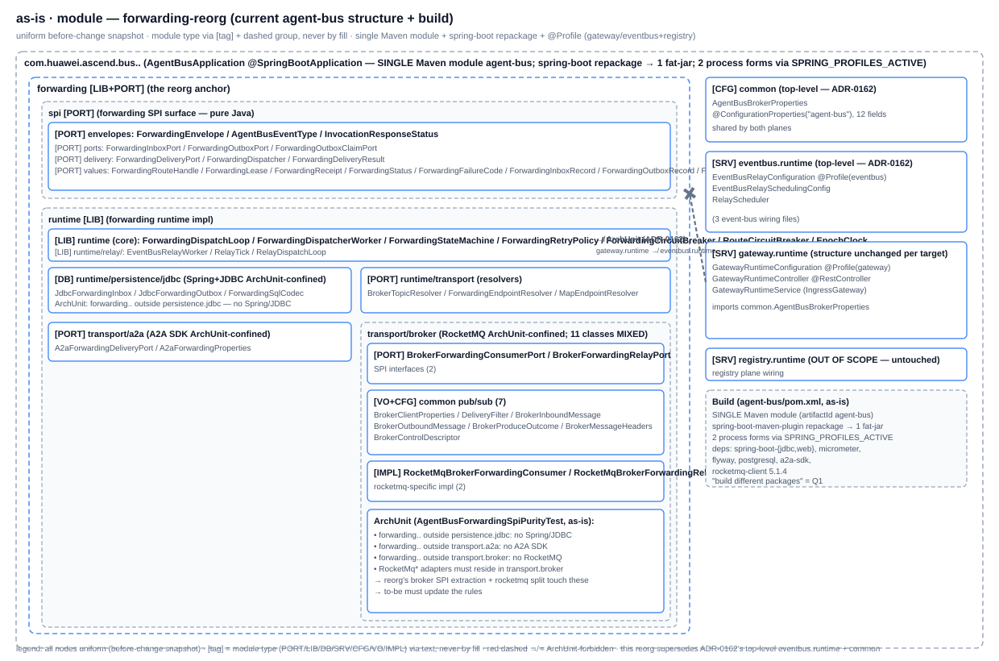
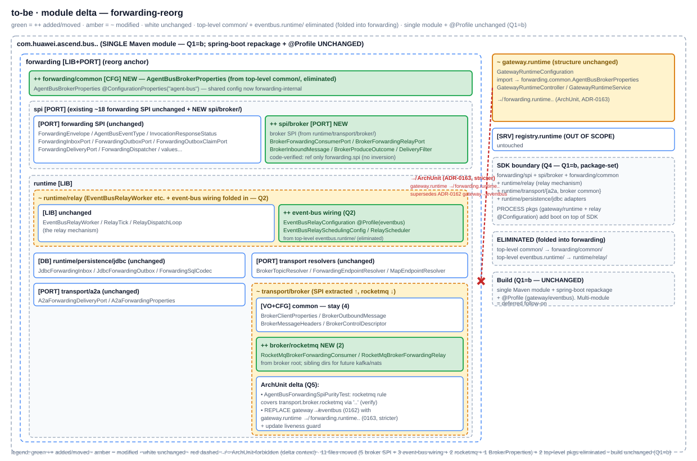
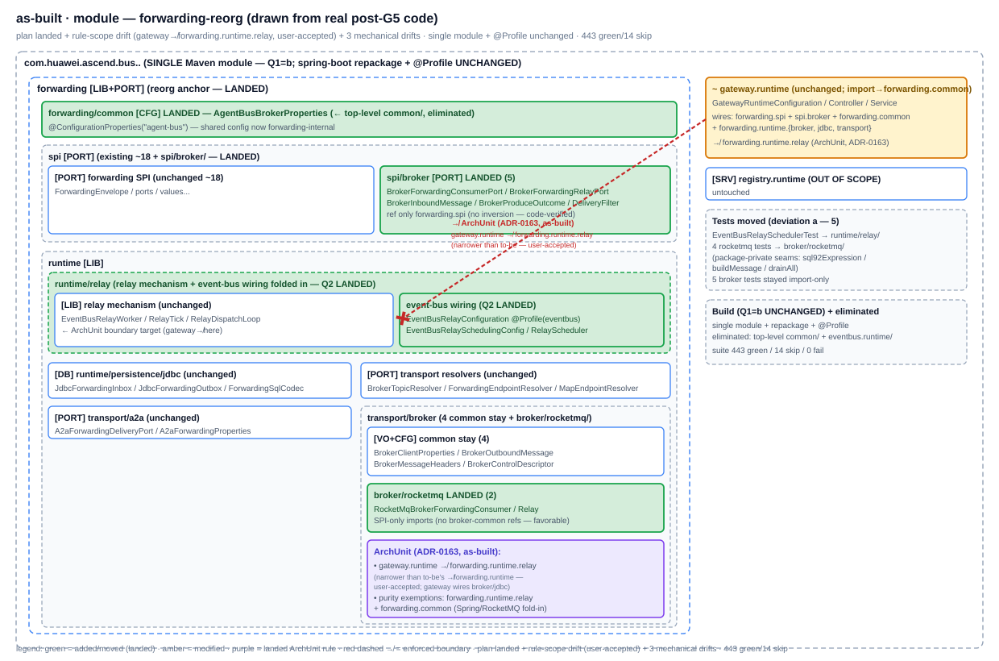

G2 · as-is
common/ + eventbus.runtime/ planes (ADR-0162); forwarding/runtime/transport/broker/ MIXED (2 SPI ports + 7 common VO/CFG + 2 rocketmq impl). Single Maven module + @Profile.module

G4 · to-be (delta)
module delta

G6 · as-built
gateway↛forwarding.runtime.relay (the relay-wiring home — the gateway legitimately wires broker/jdbc/transport as a producer/consumer). + 3 mechanical drifts (4 arch tests evolved, 5 tests moved, rocketmq-no-common-refs). 443 green/14 skip.module as-built

Actual file changes (G5 implemented — signed off 2026-07-16)
| Δ | Path | What (actual) |
|---|---|---|
| ++ | forwarding/common/AgentBusBrokerProperties.java | moved (git mv) from top-level common/ (eliminated); package decl + javadoc |
| ++ | forwarding/spi/broker/{BrokerForwardingConsumerPort,BrokerForwardingRelayPort,BrokerInboundMessage,BrokerProduceOutcome,DeliveryFilter}.java (5) | moved from forwarding/runtime/transport/broker/; package decl only (imports unchanged — ref only forwarding.spi) |
| ++ | forwarding/runtime/relay/{EventBusRelayConfiguration,EventBusRelaySchedulingConfig,RelayScheduler}.java (3) | moved from top-level eventbus.runtime/ (eliminated); package decl + imports (broker-SPI→spi.broker, rocketmq→broker.rocketmq, BrokerProperties→forwarding.common, removed now-same-pkg relay imports) |
| ++ | forwarding/runtime/transport/broker/rocketmq/{RocketMqBrokerForwardingConsumer,RocketMqBrokerForwardingRelay}.java (2) | moved from broker/ root; package decl + SPI imports (forwarding.spi.broker.* — NO broker-common refs, favorable) |
| ~ | gateway/runtime/GatewayRuntimeConfiguration.java + GatewayRuntimeService.java | imports → forwarding.spi.broker + broker.rocketmq + forwarding.common |
| ~ | forwarding/runtime/relay/EventBusRelayWorker.java + transport/BrokerTopicResolver.java + broker/{4 common, package-info}.java | import/javadoc updates (broker-SPI→spi.broker); 4 common stay |
| ++ | architecture/AgentBusDependencyBoundaryTest.java | REPLACE gateway↛eventbus rule + guard with gateway↛forwarding.runtime.relay + guard (deviation: narrower — user-accepted) |
| ~ | architecture/{AgentBusForwardingSpiPurityTest, AgentBusForwardingRuntimeContractTest, AgentBusForwardingDesignContractTest}.java (3 more) | purity exemptions for forwarding.runtime.relay + forwarding.common; forwarding.spi.broker path/sanctioned-home (deviation: 4 arch tests, not 2) |
| ++ | 5 tests moved (EventBusRelaySchedulerTest→relay/; 4 rocketmq tests→broker/rocketmq/) | build-forced by package-private access (sql92Expression/buildMessage/drainAll seams) — deviation (a) |
Net: 11 source moved (5 broker SPI + 3 event-bus wiring + 2 rocketmq + 1 BrokerProperties) + 5 test moves + 17 modified (referencers + 4 arch tests) + import ripple. Build single-module+@Profile UNCHANGED (Q1=b). ./mvnw -f agent-bus/pom.xml test → 443 green/14 skip/0 fail. See deviations.md.
G3 decision tree — as-built landed
| Q | Chosen branch (signed off 2026-07-16) | Why (one line) | as-built landed |
|---|---|---|---|
| Q1 build strategy | (b) single-module + @Profile (multi-module deferred) | the @Profile mechanism already yields distinct process forms; multi-module is bigger build ripple, deferred | ✓ landed — build unchanged; package reorg prepares the SDK/process boundary |
| Q2 event-bus wiring home | (a) forwarding/runtime/relay/ | co-located with EventBusRelayWorker (the relay mechanism they wire) | ✓ landed — 3 files in forwarding.runtime.relay |
| Q3 broker split | SPI(5)→forwarding/spi/broker/; common(4) stay broker/; rocketmq(2)→broker/rocketmq/ | code-verified: 5 SPI ref only forwarding.spi (no inversion); spi/broker/ subpackage groups the broker SPI | ✓ landed — 5 in spi/broker, 4 common stay, 2 in broker/rocketmq; rocketmq impls ref NO broker-common (favorable) |
| Q4 SDK boundary | forwarding/spi + spi/broker + forwarding/common + runtime/{relay,transport,persistence} (package-set) | what producers/consumers depend on; process forms add @Configuration on top | ✓ landed — documented package-set (Q1=b) |
| Q5 ADR/rule | (a) new ADR-0163 supersedes 0162 + replaces the rule | 0162's top-level-plane premise no longer holds (folded into forwarding) | ⚠ landed-narrower — ADR-0163 written; rule is gateway↛forwarding.runtime.relay (not ↛forwarding.runtime — infeasible, user-accepted drift); stricter-via-auto-config is a flagged follow-on |
| G3.5 UI prototype | skipped | pure backend / package+build reorg | n/a |
G6 diff vs to-be
| Matched ✓ | Drifted ⚠ | Missing ✗ | Surprise ⚠⚠ |
|---|---|---|---|
| 8 — forwarding/common, spi/broker(5), runtime/relay fold, broker/rocketmq(2), gateway import, broker common stay, build unchanged, 2 top-level pkgs eliminated | 4 — (1) rule scope narrowed to forwarding.runtime.relay (user-accepted — to-be's ↛forwarding.runtime infeasible); (2) 4 arch tests evolved not 2 (purity fold-in); (3) 5 tests moved (package-private access); (4) rocketmq impls ref no broker-common (favorable). All accepted. | 0 | 0 |
Status: CLOSED (2026-07-16). G2 as-is + G3 decision tree + G4 to-be signed off (5 branches) + G5 implemented (sub-agent, 443 green/14 skip) + G6 as-built (all Matched ✓ + 4 Drifted ⚠ accepted, 0 Missing, 0 Surprise) + G7 closed (ADR-0163 supersedes 0162). The forwarding-centric reorg landed; the gateway/event-bus plane boundary is enforced at the relay-package granularity (the realistic boundary). Stricter rule (via forwarding auto-config) + Maven multi-module are flagged follow-ons. Committed on experimental (separate from prior 8 unpushed); push deferred.